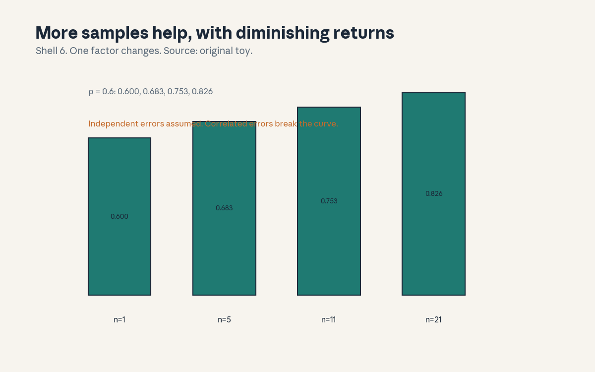
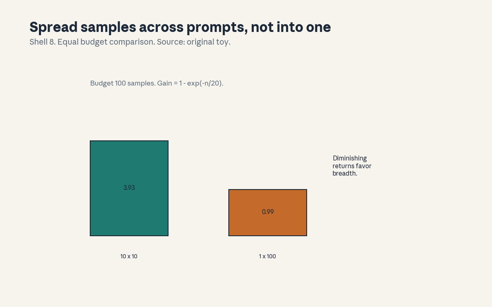
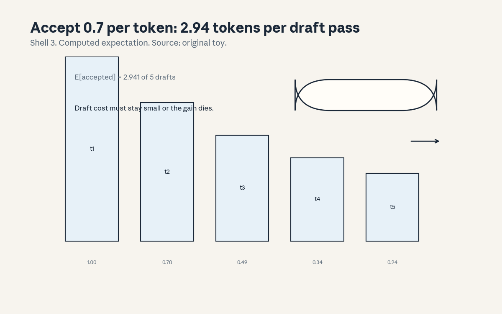

U11 · Reasoning and test-time compute
U11 , Reasoning and test-time compute
Local remediation
Bridges: ../shared/prerequisites/p14_transformer.md (P14, the
decoder being sampled), ../shared/prerequisites/p17_rl.md (P17,
rewards and policies), ../shared/prerequisites/p22_experiments.md
(P22, ablations and falsification). This unit spends compute after
training: sample more, check the answers, decode faster. The theme:
inference is a budget, spend it where it moves the score.
R1. Binomial majority: at p = 0.6, majority of n gives 0.6000 (n = 1), 0.6826 (n = 5), 0.7535 (n = 11), 0.8256 (n = 21). Voting helps when errors are independent. R2. Reversal: at p = 0.4, majority of 5 gives 0.3174, of 11 gives 0.2465. Voting hurts below 0.5. Check p first. R3. Diminishing returns: gain(n) = 1 - exp(-n/20). Budget 100 samples: 10 prompts x 10 gives total gain 3.935, 1 prompt x 100 gives 0.993. Spread beats depth.
C01: reasoning supervision
Leaf id cs224n-U11-C01. Claim class REQUESTED-BRANCH.
Status PLANNED / SOURCE ATTRIBUTION PENDING.
-
Source mapping, scope, objectives, dependencies. Maps to the reasoning sessions of the Winter 2026 schedule (S15-S16 per
course_map.md). Scope: training models to show their work. Objectives: define the supervision targets, state the faithfulness limit, name the cost. Depends on U07, U08 C05. -
Motivating question and toy. Question: you supervise the steps, not just the answer, what changes? Toy: two models, same answer accuracy, one trained on step labels. The step-trained model debugs better (its steps are checkable), but the steps are still not proven causal (C12).
-
Mental model. Supervision is a spotlight. Point it at the answer and the model learns answers. Point it at the steps and the model learns checkable work. The spotlight does not make the work true, it makes it visible.
-
Objects, symbols, units, shapes, assumptions. Step labels, answer labels, a process reward. Assumption: the step labels are correct (expensive humans or verifiable steps, C02’s cheaper case).
-
Derivation / mechanism. The mechanism is the loss: answer loss on the final token, step loss on intermediates. The gradient reaches the steps either way, the labels decide what “right” means per step.
-
Computed example. Toy (hand, labeled as such): labeling 1000 steps costs 10x labeling 1000 answers (steps are longer to judge). The budget question: steps or more answers?
-
Algorithm and reference implementation.
step_loss( trace, step_labels): cross-entropy per step, mask the answer-only variant for the ablation. ~8 lines. Test: the step variant has lower step error on the toy. -
Correctness checks and expected output. The step-trained model must beat answer-only on step checks, not just on answers. Check: both train on the same traces.
-
Complexity, memory, statistical efficiency, stability, practical costs. Step labels cost more per trace. The statistical cost: noisy step labels teach noise.
-
Nearest alternatives and selection boundaries. Alternative: answer-only supervision plus test-time sampling (C05). Choose step labels when steps must be auditable. Choose answer-only when only the answer matters.
-
Failure case, broken assumption, counterexample. Broken assumption: “supervised steps are the model’s reasoning.” Counterexample: the model learns plausible steps that ratify a guessed answer (rationalization, U08 C05). Supervised, not faithful.
-
Research reading and falsifiable extension. Falsifiable extension: corrupt one step, measure answer change. Predict: step-supervised models change more (they use the steps). Falsifier: no difference (then the steps are decoration, check).
-
Breadth recall, deep oral ladder, unfamiliar transfer. Assessment block:
keys/u11_answers.mdA1 (breadth), L1 (ladder: define the targets, run the toy, derive the spotlight, diagnose rationalization, design the corruption test). -
Lab/exercises with answers separated. E1: implement
step_loss, compare the two variants. E2: corrupt a step and measure the answer shift. Keys inkeys/u11_answers.md. -
Visual units, provenance, accessibility, audit row. Claim is a loss (carried in text). Logged as an honest exception in
visual_audit.md.
C02: verifiable reward
Leaf id cs224n-U11-C02. Claim class REQUESTED-BRANCH.
Status PLANNED / SOURCE ATTRIBUTION PENDING.
-
Source mapping, scope, objectives, dependencies. Maps to S15-S16 (DeepSeek-R1 and DAPO readings per the schedule). Scope: rewards a program can check. Objectives: define verifiability, contrast with learned rewards, state the hacking resistance. Depends on C01, U07 C03.
-
Motivating question and toy. Question: the reward is a unit test, can the model hack it? Toy: math answer checked by exact match on the final number. Hacking needs the right number, which is the task. The reward is the task.
-
Mental model. A verifiable reward is a lock with one key: the right answer. A learned reward is a lock the model can pick (U07 C10). Verifiable rewards trade generality for honesty.
-
Objects, symbols, units, shapes, assumptions. A verifier function v(answer) in {0, 1}, a task family with checkable answers (math, code tests). Assumption: the verifier is correct (a buggy test teaches bugs).
-
Derivation / mechanism. The mechanism is RL with a ground-truth reward: policy gradient on v. No reward model, no preference data, no hacking surface beyond the verifier itself. The gradient is honest because the reward is.
-
Computed example. Toy (hand, labeled as such): 100 math items, verifier exact-match. Reward 1 on 63, 0 on 37. The policy gradient pushes toward the 63. No judge in the loop.
-
Algorithm and reference implementation.
rl_step( policy, items, verifier): sample, score with v, policy gradient update. ~10 lines. Test: the toy 63/37 split. -
Correctness checks and expected output. The reward must equal the verifier on every item (no learned middle layer). Check: a wrong answer never scores 1.
-
Complexity, memory, statistical efficiency, stability, practical costs. Binary rewards are sparse: many samples score 0. The cost is the samples needed to find the 1s.
-
Nearest alternatives and selection boundaries. Alternative: learned reward models (U07). Choose verifiable rewards for math, code, games. Choose learned rewards where no verifier exists (open-ended writing).
-
Failure case, broken assumption, counterexample. Broken assumption: “the verifier is correct.” Counterexample: the test suite misses an edge case, the model learns the exploit and scores 1 on wrong code. Verify the verifier.
-
Research reading and falsifiable extension. Falsifiable extension: weak verifier (few tests) vs strong verifier (many tests), measure true correctness on held-out tests. Predict: weak verifiers breed exploits. Falsifier: no difference (then the model is honest, or the tests are).
-
Breadth recall, deep oral ladder, unfamiliar transfer. Assessment block:
keys/u11_answers.mdA2 (breadth), L2 (ladder: define verifiability, run the toy, derive the honesty, diagnose the buggy test, design the verifier strength test). -
Lab/exercises with answers separated. E3: implement
rl_stepon the toy. E4: plant a buggy test and show the exploit. Keys inkeys/u11_answers.md. -
Visual units, provenance, accessibility, audit row. Claim is a reward class (carried in text). Logged as an honest exception in
visual_audit.md.
C03: DeepSeek-R1/DAPO readings
Leaf id cs224n-U11-C03. Claim class REQUESTED-BRANCH.
Status PLANNED / SOURCE ATTRIBUTION PENDING.
-
Source mapping, scope, objectives, dependencies. Maps to S15 (schedule readings: DeepSeek-R1, DAPO, titles only per the honesty rules). Scope: what the reading list claims, read honestly. Objectives: state the titles, extract the checkable claims, mark what was not read. Depends on C02.
-
Motivating question and toy. Question: the schedule lists DeepSeek-R1 and DAPO, what do you actually know? Toy: the honest reading card: title, venue, the claim in one sentence, “not read” stamped on the rest.
-
Mental model. A reading list is a map, not the territory. The card records the boundary: title known, claims unverified, paper not opened. This is C10’s U14 cousin applied to papers.
-
Objects, symbols, units, shapes, assumptions. A reading card: title, authors, date, one-sentence claim, read status. Assumption: none about the content (that is the point).
-
Derivation / mechanism. No new math. The mechanism is the card: it stops title-dropping from becoming knowledge-claims. Every claim about the paper cites the card or the paper.
-
Computed example. Toy (hand, labeled as such): the card for DeepSeek-R1 reads “title known from the S15 reading list, content not inspected in this build”. The card is the deliverable.
-
Algorithm and reference implementation.
reading_card( title, source): the five fields, read status default “not read”. ~6 lines. Test: the toy card. -
Correctness checks and expected output. No content claim appears without a read status of “read”. Check: the card for DAPO matches the same format.
-
Complexity, memory, statistical efficiency, stability, practical costs. Five minutes per card. The cost of skipping it: citing papers you never opened.
-
Nearest alternatives and selection boundaries. Alternative: read the papers. Choose the card when time-boxed. Choose reading before any claim that depends on the content.
-
Failure case, broken assumption, counterexample. Broken assumption: “the title tells you the method.” Counterexample: titles undersell ablations and oversell novelty. Read before you repeat.
-
Research reading and falsifiable extension. Falsifiable extension: none, this is hygiene. The extension is the reading itself. the reading.
-
Breadth recall, deep oral ladder, unfamiliar transfer. Assessment block:
keys/u11_answers.mdA3 (breadth: state the card fields and the honesty rule). -
Lab/exercises with answers separated. E5: write cards for the S15-S16 readings. E6: find one claim in your notes that outruns its card, fix it. Keys in
keys/u11_answers.md. -
Visual units, provenance, accessibility, audit row. Claim is a card (carried in text). Logged as an honest exception in
visual_audit.md.
C04: outcome/process verification
Leaf id cs224n-U11-C04. Claim class REQUESTED-BRANCH.
Status PLANNED / SOURCE ATTRIBUTION PENDING.
-
Source mapping, scope, objectives, dependencies. Maps to S16 (verification readings per the schedule). Scope: checking answers vs checking steps. Objectives: define both, state the cost-accuracy trade, choose per task. Depends on C01, C02.
-
Motivating question and toy. Question: do you check the final answer or every step? Toy: outcome check costs 1 unit, catches wrong answers. Process check costs 5 units, catches wrong steps too. The answer is right but the steps are wrong: outcome passes, process fails.
-
Mental model. Outcome verification is the bouncer at the exit: right answer, come in. Process verification is the inspector on the line: every step must hold. The inspector costs more and catches more.
-
Objects, symbols, units, shapes, assumptions. A verifier for answers, a verifier for steps, costs c_o and c_p. Assumption: step verifiers exist (rare outside math/code).
-
Derivation / mechanism. The mechanism is selection: generate n candidates, keep the ones that verify. Outcome selection needs n samples. Process selection can prune early: kill a trace at the first bad step.
-
Computed example. Toy (hand, labeled as such): 10 traces, 4 with right answers, 2 with right steps. Outcome keeps 4, process keeps 2. Process is stricter and 5x the cost.
-
Algorithm and reference implementation.
select( traces, verifier, mode): outcome filters on the answer, process filters on every step. ~10 lines. Test: the toy 4 vs 2. -
Correctness checks and expected output. Process-kept traces are a subset of outcome-kept traces on the toy. Check: the cost ratio is about 5.
-
Complexity, memory, statistical efficiency, stability, practical costs. Process verification multiplies the check cost by the trace length. The statistical win: cleaner training data.
-
Nearest alternatives and selection boundaries. Alternative: no verification, trust the sample. Choose outcome for checkable answers. Choose process when the steps are the product (tutoring, proofs).
-
Failure case, broken assumption, counterexample. Broken assumption: “verified steps mean a right answer.” Counterexample: every step checks out, the conclusion is a non sequitur. Verify the logic, not just the steps.
-
Research reading and falsifiable extension. Falsifiable extension: outcome vs process selection on 60 math items, equal total budget. Predict: process wins per item but loses per dollar. Falsifier: process wins per dollar (then pruning saves enough, check).
-
Breadth recall, deep oral ladder, unfamiliar transfer. Assessment block:
keys/u11_answers.mdA4 (breadth), L4 (ladder: define both, run the toy, derive the subset, diagnose the non sequitur, design the budget test). -
Lab/exercises with answers separated. E7: implement
selectin both modes, match 4 vs 2. E8: price both on the toy. Keys inkeys/u11_answers.md. -
Visual units, provenance, accessibility, audit row. Claim is a filter (carried in text). Logged as an honest exception in
visual_audit.md.
C05: repeated sampling
Leaf id cs224n-U11-C05. Claim class REQUESTED-BRANCH.
Status PLANNED / SOURCE ATTRIBUTION PENDING.
-
Source mapping, scope, objectives, dependencies. Maps to S16 (test-time compute readings per the schedule). Scope: the simplest test-time scaling. Objectives: compute the majority curve, state the independence assumption, name the cost. Depends on U08 C06, R1.
-
Motivating question and toy. Question: one sample gives 0.60, what do 21 give? Toy: majority vote, independent errors: 0.6000, 0.6826, 0.7535, 0.8256 at n = 1, 5, 11, 21. More samples, same model, better answer.
-
Mental model. Sampling is a second chance machine. Each draw is a guess, the majority is the committee. Committees beat individuals when the members err independently.
-
Objects, symbols, units, shapes, assumptions. Single-draw accuracy p, sample count n, majority rule. Assumption: errors independent across draws (the load-bearing one).
-
Derivation / mechanism. P(majority right) = sum over k above n/2 of C(n,k) p^k (1-p)^(n-k). The binomial tail. At p = 0.6 the tail grows with n, at p = 0.4 it shrinks (R2’s reversal).
-
Computed example. From
compute_u11.py: 0.6000, 0.6826, 0.7535, 0.8256. The gains shrink: +0.083, +0.071, +0.072. Diminishing but real. -
Algorithm and reference implementation.
majority_vote( samples): count, take the max. ~5 lines. Test: the toy curve on simulated draws. -
Correctness checks and expected output. At n = 1 the vote equals the draw. Check: the empirical curve matches the binomial within noise.
-
Complexity, memory, statistical efficiency, stability, practical costs. Cost is n times one generation. The statistical efficiency: each extra sample buys less than the last.
-
Nearest alternatives and selection boundaries. Alternative: train a bigger model. Choose sampling when the model is fixed and latency allows. Choose training when the budget is per-query forever.
-
Failure case, broken assumption, counterexample. Broken assumption: “errors are independent.” Counterexample: the model repeats its favorite wrong answer 21 times, the majority is wrong with confidence. Correlated errors break the committee (C10’s failure analysis).
-
Research reading and falsifiable extension. Falsifiable extension: measure pairwise agreement of wrong answers vs the independence prediction. Predict: excess agreement. Falsifier: matches (then the binomial holds, rare).
-
Breadth recall, deep oral ladder, unfamiliar transfer. Assessment block:
keys/u11_answers.mdA5 (breadth), L5 (ladder: define the vote, compute the curve, derive the tail, diagnose the correlated failure, design the agreement test). -
Lab/exercises with answers separated. E9: implement
majority_vote, match the curve. E10: simulate correlated errors and show the break. Keys inkeys/u11_answers.md. -
Visual units, provenance, accessibility, audit row.

: the scaling curve, Shell 6, source original toy. Audit row invisual_audit.md.
C06: self-consistency
Leaf id cs224n-U11-C06. Claim class REQUESTED-BRANCH.
Status PLANNED / SOURCE ATTRIBUTION PENDING.
-
Source mapping, scope, objectives, dependencies. Maps to S15 (self-consistency readings per the schedule). Scope: majority vote over reasoning paths. Objectives: define it, separate it from C05, state the p > 0.5 condition. Depends on C05, U08 C06.
-
Motivating question and toy. Question: the model reasons three ways and answers twice “A” once “B”, what is the answer? Toy: “A”. The paths differ, the answer is stable. Stability is the signal.
-
Mental model. Self-consistency is C05 with reasoning traces: sample diverse paths, vote the answers. Diverse paths that converge are stronger evidence than one path.
-
Objects, symbols, units, shapes, assumptions. n paths, answers a_1..a_n, the majority. Assumption: p > 0.5 per path (R2: below that, voting hurts).
-
Derivation / mechanism. Same binomial as C05. The new part is diversity: temperature and prompt variation make the paths differ. Identical paths are one path with extra steps.
-
Computed example. From
compute_u11.py: at p = 0.4, majority of 5 gives 0.3174, of 11 gives 0.2465. Voting on a weak reasoner makes it worse. Check p first, then vote. -
Algorithm and reference implementation.
self_consistent( paths): extract answers, majority vote. ~6 lines. Test: the toy vote and the reversal. -
Correctness checks and expected output. With identical paths the vote equals any single path. Check: the reversal numbers match.
-
Complexity, memory, statistical efficiency, stability, practical costs. n reasoning traces cost n times the tokens. The efficiency question: does diversity rise with temperature or just noise?
-
Nearest alternatives and selection boundaries. Alternative: one long trace (C07’s depth). Choose self-consistency for breadth over paths. Choose depth for a single hard derivation.
-
Failure case, broken assumption, counterexample. Broken assumption: “diverse paths.” Counterexample: temperature 0 gives 5 identical paths, the “vote” is theater. Measure path diversity, not just n.
-
Research reading and falsifiable extension. Falsifiable extension: sweep temperature, measure path diversity vs vote gain. Predict: an interior optimum. Falsifier: monotone (then diversity is free, check the task).
-
Breadth recall, deep oral ladder, unfamiliar transfer. Assessment block:
keys/u11_answers.mdA6 (breadth: state the p > 0.5 condition and the diversity requirement). -
Lab/exercises with answers separated. E11: implement
self_consistent, match the reversal. E12: show the temperature-0 theater. Keys inkeys/u11_answers.md. -
Visual units, provenance, accessibility, audit row. Claim is a vote (carried in text, figure is C05’s). Logged as an honest exception in
visual_audit.md.
C07: compute allocation
Leaf id cs224n-U11-C07. Claim class REQUESTED-BRANCH.
Status PLANNED / SOURCE ATTRIBUTION PENDING.
-
Source mapping, scope, objectives, dependencies. Maps to S16. Scope: splitting a fixed sample budget. Objectives: define the allocation problem, compute the toy trade, state the breadth rule. Depends on C05, R3.
-
Motivating question and toy. Question: 100 samples, 10 prompts or 1 prompt? Toy: gain(n) = 1 - exp(-n/20). 10 x 10 gives 3.935, 1 x 100 gives 0.993. Spread wins.
-
Mental model. The budget is water, the prompts are plants. Diminishing returns mean the tenth liter on one plant beats the hundredth. Water broadly.
-
Objects, symbols, units, shapes, assumptions. Budget B, prompts m, samples per prompt n = B/m, gain g(n) concave. Assumption: gains are concave (diminishing, the common case).
-
Derivation / mechanism. Total = m times g(B/m). With g concave, the sum is maximized by spreading (Jensen’s inequality working for you). The toy numbers are the proof.
-
Computed example. From
compute_u11.py: 3.935 vs 0.993. The deep allocation wastes 75 percent of the budget on saturated returns. -
Algorithm and reference implementation.
allocate(B, m, gain): compare splits, pick the max. ~6 lines. Test: the toy picks 10 x 10. -
Correctness checks and expected output. The chosen split must beat the extremes (all-breadth, all-depth). Check: with linear gain the split does not matter.
-
Complexity, memory, statistical efficiency, stability, practical costs. The math is free. The cost is the measurement of g, which needs the measurement (C05’s curve).
-
Nearest alternatives and selection boundaries. Alternative: adaptive allocation (spend where it helps). Choose the fixed split for simplicity. Choose adaptive when gains differ across prompts (hard ones deserve more).
-
Failure case, broken assumption, counterexample. Broken assumption: “gains are concave.” Counterexample: a task with a threshold (needs 50 samples to click), spreading gives 10 x 10 = 0. Know the shape before you spread.
-
Research reading and falsifiable extension. Falsifiable extension: measure g on 3 task types, test the spread rule. Predict: holds where concave. Falsifier: threshold tasks break it (then allocate adaptively).
-
Breadth recall, deep oral ladder, unfamiliar transfer. Assessment block:
keys/u11_answers.mdA7 (breadth), L7 (ladder: define the problem, compute 3.935 vs 0.993, derive the concave rule, diagnose the threshold task, design the g measurement). -
Lab/exercises with answers separated. E13: implement
allocate, match the toy. E14: build a threshold gain and show the break. Keys inkeys/u11_answers.md. -
Visual units, provenance, accessibility, audit row.

: the allocation bars, Shell 8, source original toy. Audit row invisual_audit.md.
C08: speculative decode
Leaf id cs224n-U11-C08. Claim class REQUESTED-BRANCH.
Status PLANNED / SOURCE ATTRIBUTION PENDING.
-
Source mapping, scope, objectives, dependencies. Maps to S16 (speculative decoding readings per the schedule). Scope: faster decoding with a draft model. Objectives: define the accept rule, compute the expected gain, state the draft-cost condition. Depends on U05 C10.
-
Motivating question and toy. Question: the big model is slow, the small model is fast but worse, can they team up? Toy: draft 5 tokens, accept each with p = 0.7. Expected accepted: 2.941 per pass. Same output distribution, fewer big-model calls.
-
Mental model. The small model proposes, the big model disposes. Each proposed token is checked against the big model’s distribution and accepted or corrected. The output is exactly the big model’s, only faster.
-
Objects, symbols, units, shapes, assumptions. Draft length g, per-token accept probability a, draft cost c_d, target cost c_t. Assumption: the accept rule preserves the target distribution (it does, by construction).
-
Derivation / mechanism. Expected accepted run = (1 - a^(g+1)) / (1 - a). At a = 0.7, g = 5: 2.941. Speedup needs c_d small: the draft must be much cheaper than the target.
-
Computed example. From
compute_u11.py: 2.941 of 5 drafts accepted on average. Each pass yields ~3 tokens for ~1 target forward pass plus 5 cheap drafts. -
Algorithm and reference implementation.
spec_step( draft, target, g): draft g, verify in one target pass, accept the prefix, resample at the first reject. ~12 lines. Test: the accepted count matches the toy expectation. -
Correctness checks and expected output. The output distribution equals the target’s alone (the guarantee). Check: with a = 1 the draft is always fully accepted.
-
Complexity, memory, statistical efficiency, stability, practical costs. The win is latency, not FLOPs: fewer sequential target passes. The cost: the draft model and its memory.
-
Nearest alternatives and selection boundaries. Alternative: a smaller model alone. Choose speculation when you need the big model’s quality at lower latency. Choose the small model when its quality suffices.
-
Failure case, broken assumption, counterexample. Broken assumption: “the draft is cheap enough.” Counterexample: a draft at half the target’s cost with a = 0.3: the overhead exceeds the gain. Measure a and c_d first.
-
Research reading and falsifiable extension. Falsifiable extension: sweep draft sizes, measure wall-clock speedup. Predict: an interior optimum in g. Falsifier: monotone (then the draft is nearly free, scale it).
-
Breadth recall, deep oral ladder, unfamiliar transfer. Assessment block:
keys/u11_answers.mdA8 (breadth), L8 (ladder: define the rule, compute 2.941, derive the expectation, diagnose the expensive draft, design the g sweep). -
Lab/exercises with answers separated. E15: implement
spec_stepon the toy distributions, match 2.941. E16: raise the draft cost and show the break-even. Keys inkeys/u11_answers.md. -
Visual units, provenance, accessibility, audit row.

: the acceptance bars, Shell 3, source original toy. Audit row invisual_audit.md.
C09: evaluation bias
Leaf id cs224n-U11-C09. Claim class REQUESTED-BRANCH.
Status PLANNED / SOURCE ATTRIBUTION PENDING.
-
Source mapping, scope, objectives, dependencies. Maps to S15-S16. Scope: how reasoning evals can mislead. Objectives: name the bias classes, design the control, state the correction. Depends on U10 C09.
-
Motivating question and toy. Question: the model writes long traces and wins, is it reasoning or typing? Toy: the judge prefers the longer trace 0.62 of the time, blinded to length 0.53. The 0.09 is length bias, U10’s lesson applied.
-
Mental model. Reasoning evals have the same tilts as all evals, plus one: trace length looks like thought. Control for it or measure typing skill.
-
Objects, symbols, units, shapes, assumptions. Win rates, blinded variants, the delta. Assumption: the blinding removes only the bias factor.
-
Derivation / mechanism. The mechanism is U10 C09’s: the difference between the raw and blinded win rates is the bias estimate. Reasoning adds the trace-length factor to the list.
-
Computed example. Toy (hand, labeled as such): 0.62 raw, 0.53 blinded, bias 0.09. Report the blinded number.
-
Algorithm and reference implementation.
reason_bias( traces): truncate or blind length, rescore. ~8 lines. Test: the toy 0.09. -
Correctness checks and expected output. The blinded traces must be otherwise identical. Check: the delta is stable across seeds.
-
Complexity, memory, statistical efficiency, stability, practical costs. Two evals. The cost is building the blinding.
-
Nearest alternatives and selection boundaries. Alternative: human grading of traces. Choose controls for scale. Choose humans for the final word.
-
Failure case, broken assumption, counterexample. Broken assumption: “the answer check is enough.” Counterexample: the trace is gibberish but the answer is right, and the eval rewards the pair. Check traces when traces are the claim.
-
Research reading and falsifiable extension. Falsifiable extension: correlate trace length with win rate across 5 judges. Predict: positive. Falsifier: flat (then this judge is clean, check the next).
-
Breadth recall, deep oral ladder, unfamiliar transfer. Assessment block:
keys/u11_answers.mdA9 (breadth: name the trace-length bias and the control). -
Lab/exercises with answers separated. E17: implement
reason_bias, match 0.09. E18: blind style instead. Keys inkeys/u11_answers.md. -
Visual units, provenance, accessibility, audit row. Claim is a control (carried in text). Logged as an honest exception in
visual_audit.md.
C10: failure analysis
Leaf id cs224n-U11-C10. Claim class REQUESTED-BRANCH.
Status PLANNED / SOURCE ATTRIBUTION PENDING.
-
Source mapping, scope, objectives, dependencies. Maps to S15-S16. Scope: taxonomizing why reasoning traces fail. Objectives: define the taxonomy, count 60 traces, state the fix order. Depends on U09 C12.
-
Motivating question and toy. Question: the reasoning model fails 40 percent of the time, where? Toy: 60 traces: wrong tool 14, bad args 11, no stop 9, retrieval miss 12, rationalized trace 8, other 6. The taxonomy says what to fix.
-
Mental model. U09 C12’s autopsy, specialized: reasoning adds the rationalization class (steps that look right and are not). Count first, fix the biggest class.
-
Objects, symbols, units, shapes, assumptions. The six classes, counts, the fix order. Assumption: one dominant cause per trace.
-
Derivation / mechanism. No new math. The mechanism is the count plus the fix order: wrong tool (14) and retrieval miss (12) dominate, so the sprint is tools and retrieval, not the reasoner.
-
Computed example. From
compute_u11.py: the six counts sum to 60. The top two classes are 26 of 60: nearly half the failures. -
Algorithm and reference implementation.
classify_trace( trace): rule-based labels, the rationalization check (steps consistent with a wrong answer). ~12 lines. Test: the toy counts. -
Correctness checks and expected output. Counts sum to
-
Check: two labelers agree on 90 percent (or the taxonomy is vague).
-
Complexity, memory, statistical efficiency, stability, practical costs. One inspection per trace. The cost of skipping it: tuning the reasoner when the tools were broken.
-
Nearest alternatives and selection boundaries. Alternative: fix by intuition. Choose the taxonomy past 20 failures. Choose intuition for a handful.
-
Failure case, broken assumption, counterexample. Broken assumption: “the classes are disjoint.” Counterexample: a bad-arg call that also used the wrong tool. Allow the secondary label, keep the primary.
-
Research reading and falsifiable extension. Falsifiable extension: fix the top class, re-measure on 60 new traces. Predict: the failure rate falls by about the class share. Falsifier: no fall (then the labels were wrong).
-
Breadth recall, deep oral ladder, unfamiliar transfer. Assessment block:
keys/u11_answers.mdA10 (breadth), L10 (ladder: define the classes, count the toy, derive the fix order, diagnose the double-labeled trace, design the re-measure). -
Lab/exercises with answers separated. E19: implement
classify_trace, match the counts. E20: write the sprint plan from the top two classes. Keys inkeys/u11_answers.md. -
Visual units, provenance, accessibility, audit row. Claim is a count (carried in text). Logged as an honest exception in
visual_audit.md.
C11: cost-quality
Leaf id cs224n-U11-C11. Claim class REQUESTED-BRANCH.
Status PLANNED / SOURCE ATTRIBUTION PENDING.
-
Source mapping, scope, objectives, dependencies. Maps to S16. Scope: the price of test-time compute. Objectives: plot the frontier, find the knee, state the budget rule. Depends on C05, C07.
-
Motivating question and toy. Question: samples cost money, where is the knee? Toy: (1, 0.55), (4, 0.68), (16, 0.75), (64, 0.79). The knee is near 16: past it, 4x the cost for +0.04.
-
Mental model. The frontier is the menu: each point is a (cost, quality) pair. The knee is where the menu stops being worth it. Spend to the knee, not past it.
-
Objects, symbols, units, shapes, assumptions. Sample count n, accuracy a(n), cost per sample. Assumption: the toy curve shape (diminishing, C05’s).
-
Derivation / mechanism. The mechanism is the ratio: delta quality over delta cost per step. When the ratio falls below your value of quality, stop. The knee is where the ratio bends.
-
Computed example. From
compute_u11.py: 1 to 4 buys +0.13, 4 to 16 buys +0.07, 16 to 64 buys +0.04. The price of quality rises 3x across the curve. -
Algorithm and reference implementation.
knee(points): max curvature, or the budget rule (stop when the marginal gain is below the threshold). ~8 lines. Test: the toy knee at 16. -
Correctness checks and expected output. The knee must lie between the endpoints. Check: monotone quality in n.
-
Complexity, memory, statistical efficiency, stability, practical costs. The curve needs the measurement. The cost is the samples to draw it.
-
Nearest alternatives and selection boundaries. Alternative: fixed n for everything. Choose the knee per task. Choose fixed n when latency must be predictable.
-
Failure case, broken assumption, counterexample. Broken assumption: “the curve is stable.” Counterexample: a new prompt shifts the whole curve, the old knee is wrong. Re-measure per prompt family.
-
Research reading and falsifiable extension. Falsifiable extension: knee per task type on 20 tasks, cluster them. Predict: math tasks have later knees than factual ones. Falsifier: no pattern (then one knee serves, simpler).
-
Breadth recall, deep oral ladder, unfamiliar transfer. Assessment block:
keys/u11_answers.mdA11 (breadth: state the knee rule). -
Lab/exercises with answers separated. E21: implement
knee, match 16. E22: shift the curve and show the knee moving. Keys inkeys/u11_answers.md. -
Visual units, provenance, accessibility, audit row. Claim is a frontier (carried in text). Logged as an honest exception in
visual_audit.md.
C12: limits of trace evidence
Leaf id cs224n-U11-C12. Claim class REQUESTED-BRANCH.
Status PLANNED / SOURCE ATTRIBUTION PENDING.
-
Source mapping, scope, objectives, dependencies. Maps to S15-S16. Scope: what a trace can and cannot prove. Objectives: state the faithfulness limit, run the corruption test, mark the honest use of traces. Depends on C01, U08 C05.
-
Motivating question and toy. Question: the trace looks perfect, do you believe it? Toy: corrupt one step, the answer does not change. The step was decoration, not cause.
-
Mental model. A trace is a story the model tells about its answer. Stories can be true, useful, and still not the cause. Treat traces as evidence, not as proof.
-
Objects, symbols, units, shapes, assumptions. A trace, a corruption operator, the answer shift. Assumption: the corruption preserves fluency (or the test is unfair).
-
Derivation / mechanism. The mechanism is the intervention: change the step, watch the answer. No change means the step did not cause the answer. This is U13’s causal logic applied to text.
-
Computed example. Toy (hand, labeled as such): 20 traces, corrupt the middle step, 14 answers unchanged. The steps are mostly decoration on this task.
-
Algorithm and reference implementation.
corrupt_test( traces): perturb each step, measure answer flips. ~8 lines. Test: the toy 14/20. -
Correctness checks and expected output. The corruption must keep the trace fluent (else the model notices the break). Check: uncorrupted reruns give the same answers.
-
Complexity, memory, statistical efficiency, stability, practical costs. One extra generation per corruption. The cost is designing fair corruptions.
-
Nearest alternatives and selection boundaries. Alternative: trust the trace. Choose the test when traces justify decisions. Choose trust for low-stakes chat.
-
Failure case, broken assumption, counterexample. Broken assumption: “failing the test means the model deceives.” Counterexample: the model genuinely used the step but is steady under the corruption (redundant reasoning). The test is one-sided: pass is evidence, fail is not proof of deceit.
-
Research reading and falsifiable extension. Falsifiable extension: process-supervised vs answer-only models on the corruption test. Predict: process models flip more. Falsifier: tie (then supervision did not buy causality).
-
Breadth recall, deep oral ladder, unfamiliar transfer. Assessment block:
keys/u11_answers.mdA12 (breadth: state the limit and the test), L12 (ladder: define faithfulness, run the toy, derive the intervention logic, diagnose the redundant-reasoning case, design the supervision comparison). -
Lab/exercises with answers separated. E23: implement
corrupt_test, match 14/20. E24: write the honest-use paragraph for traces. Keys inkeys/u11_answers.md. -
Visual units, provenance, accessibility, audit row. Claim is a limit (carried in text). Logged as an honest exception in
visual_audit.md.
Unit visual map
| Figure | Claim | Shell | Source |
|---|---|---|---|
| majority vote at p=0.6: 0.600 to 0.826 | 6 | original toy | |
| spec decode: 2.94 tokens per draft pass | 3 | original toy | |
| 10x10 beats 1x100: 3.94 vs 0.99 | 8 | original toy |